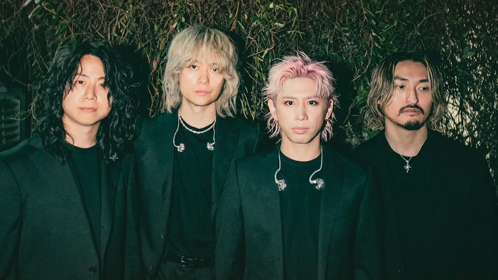

✶
One Ok Rock
✶One Ok Rock est un groupe japonais mêlant rock alternatif, énergie live et sonorités modernes. Sur la scène du Pulse Festival, le groupe représente une performance intense, émotionnelle et puissante.